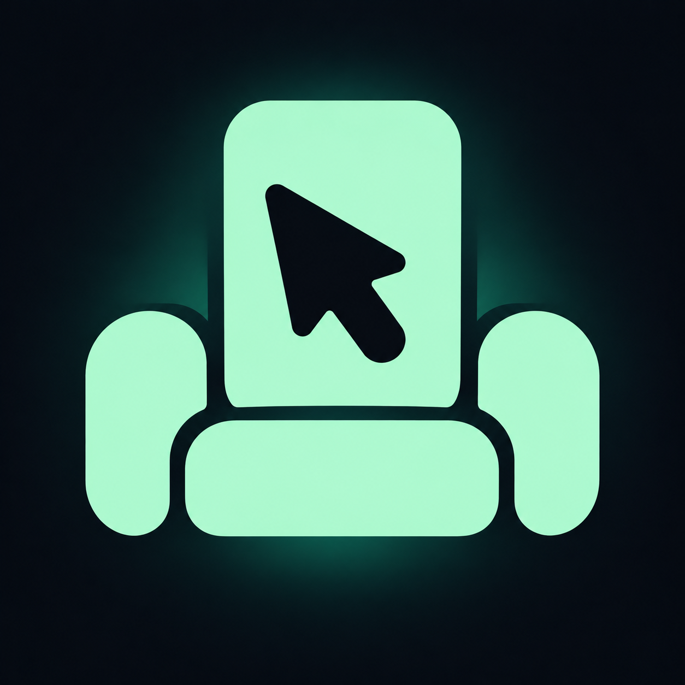
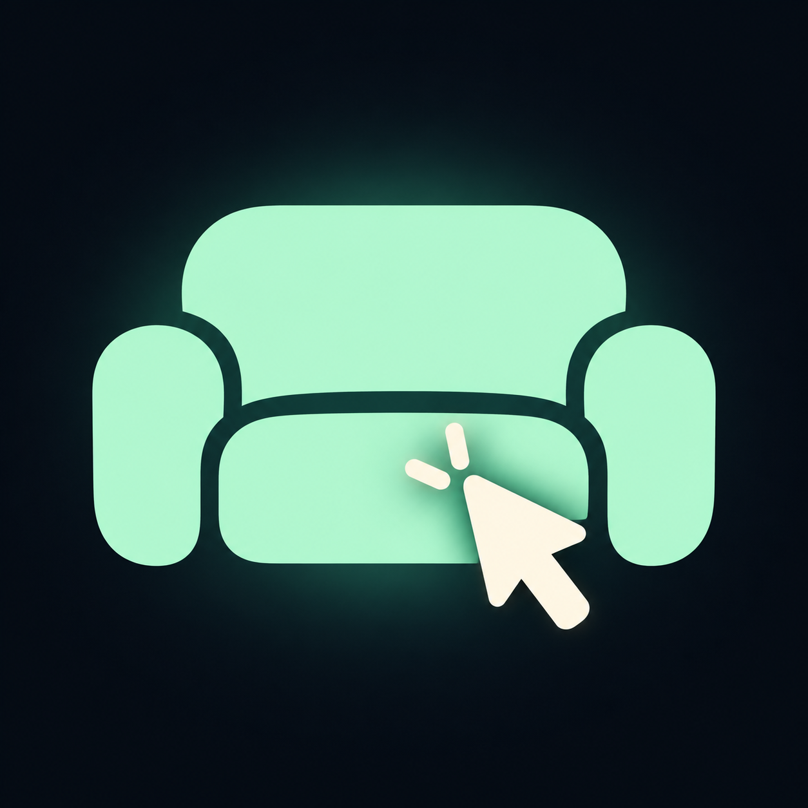
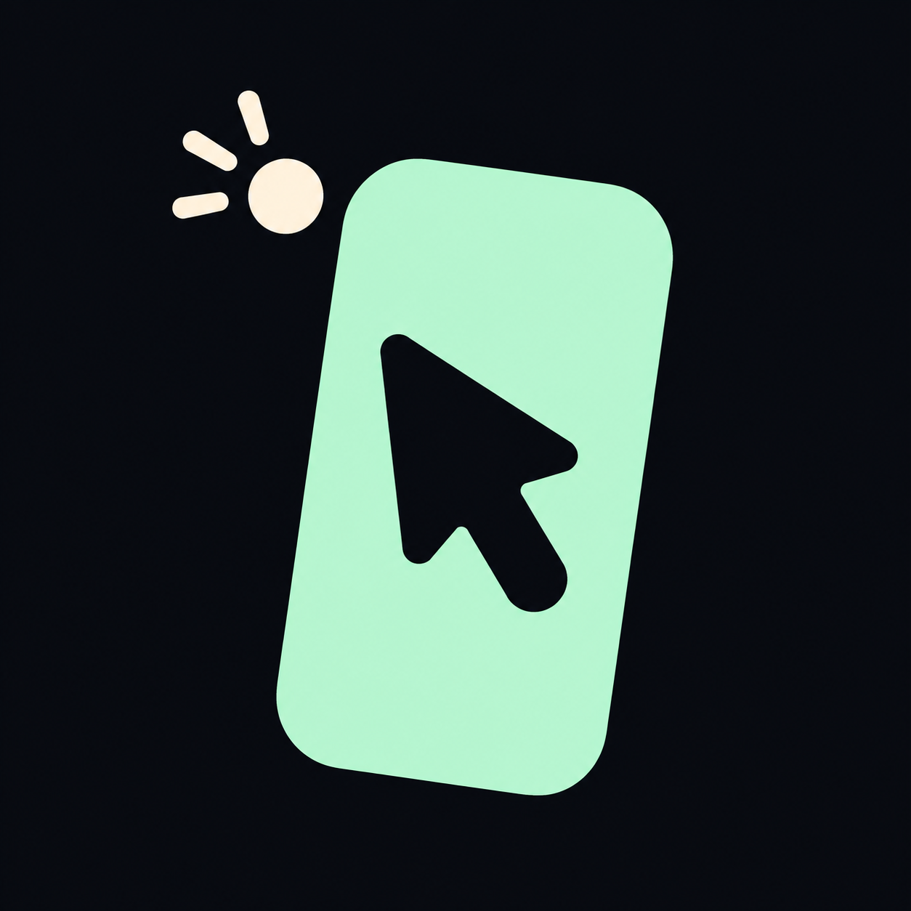
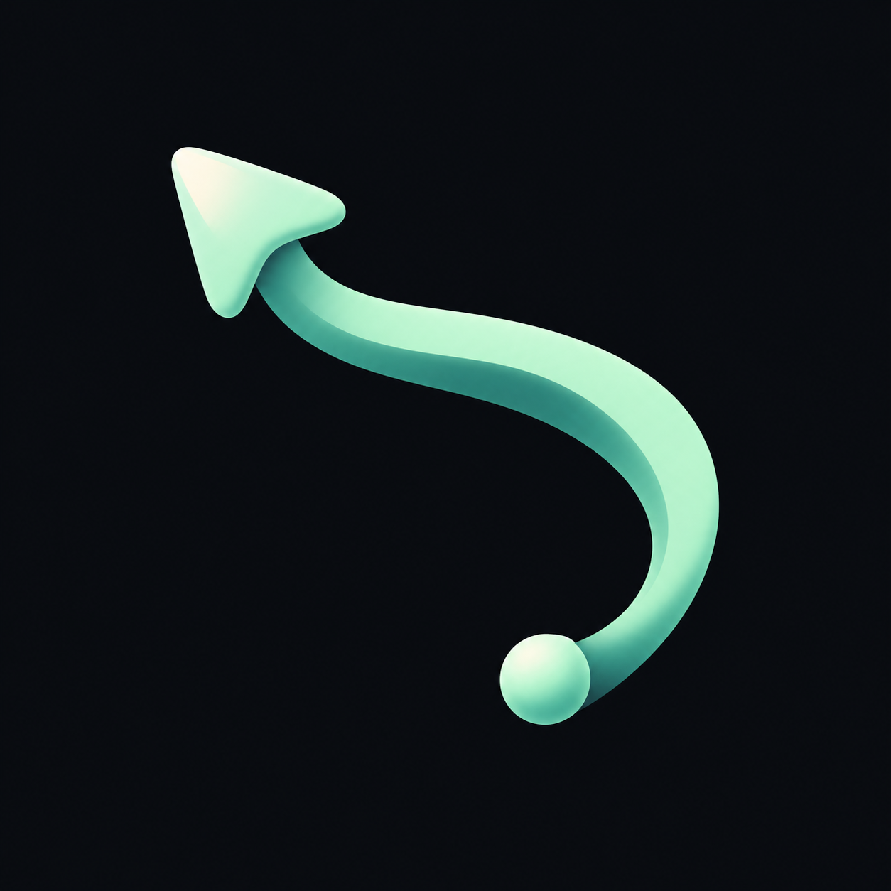
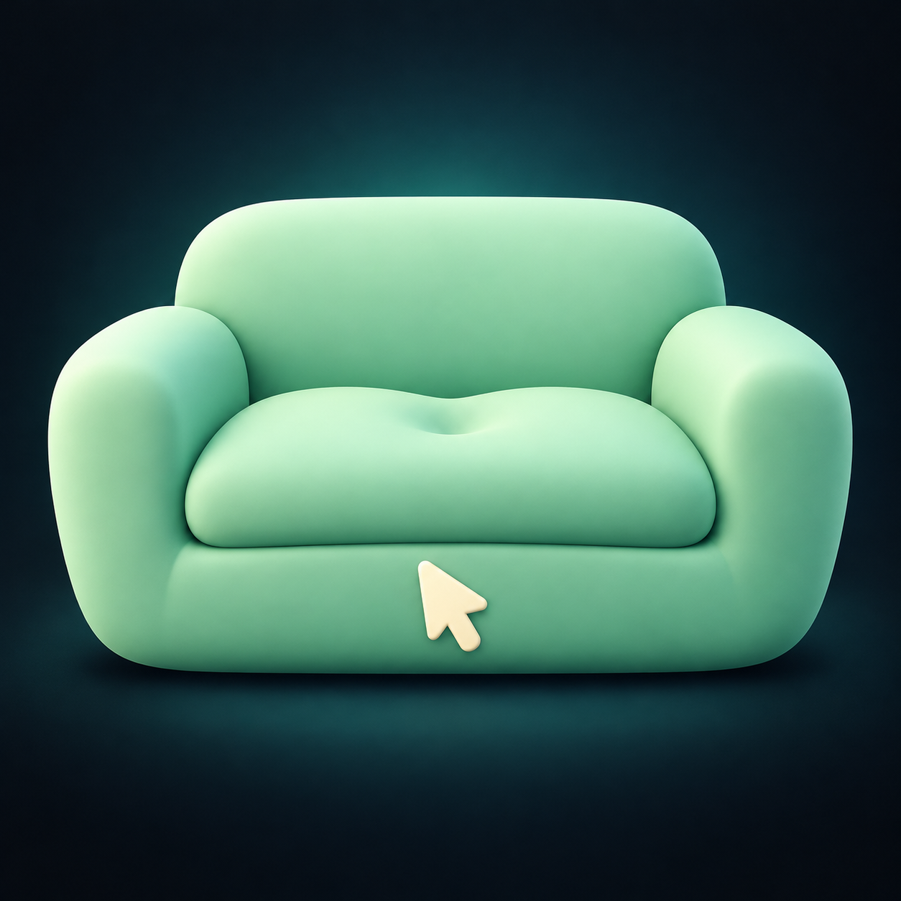
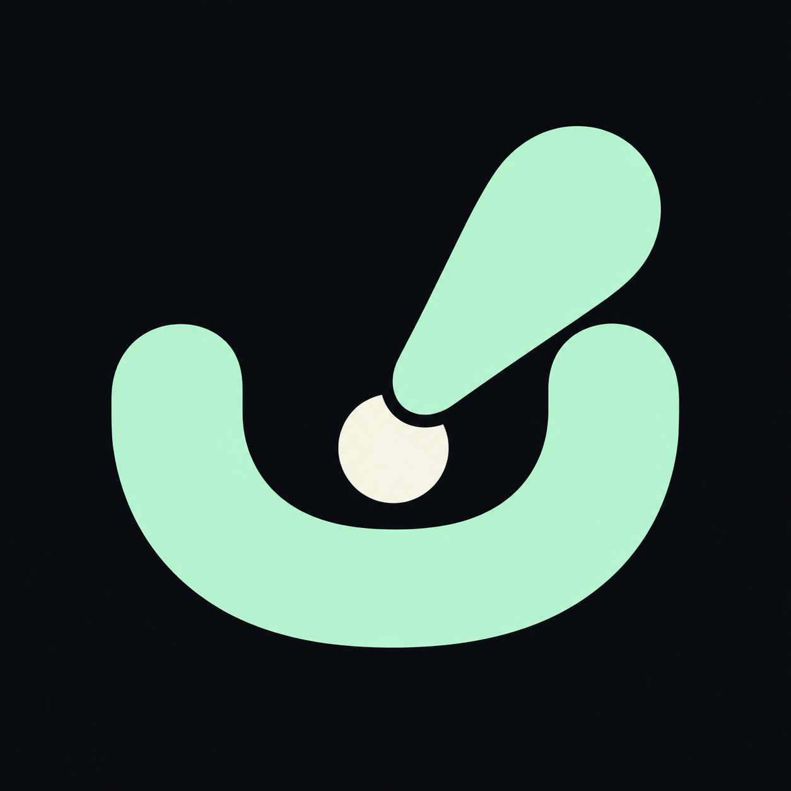

最新方案按你的选择合并「沙发轻点」与「手机光标」：手机成为沙发的中央靠背，光标只在手机内。Sofatap 的产品方向是用 iPhone 控制客厅 Windows、Mac 和受支持的 Linux 桌面。深墨蓝与薄荷绿沿用现有 App 配色；每张方案都可点击查看原图。小图预览只用页面显示尺寸缩放，原图未裁切或修改。

合并方案 1 和 2。竖屏手机融入中央靠背，两侧扶手和坐垫围绕手机；鼠标光标只出现在手机内部。

原始方向：沙发与点击同时可读，为最新合并方案提供沙发造型。

强调手机变光标，功能含义清楚，整体更像通用遥控工具。

流动轨迹突出空中鼠标与轻松手势，品牌感强，场景含义较抽象。

柔软实体沙发最亲和，适合强调舒适与普通消费者；缩小时点击符号较弱。

简洁轻触符号有记忆点，图形更抽象，可能被看作绘画工具。